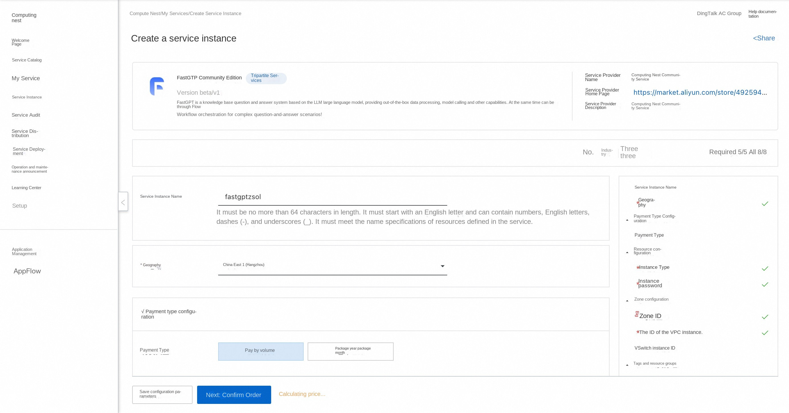
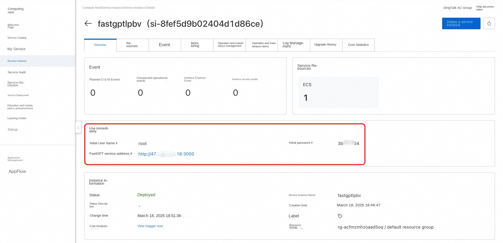
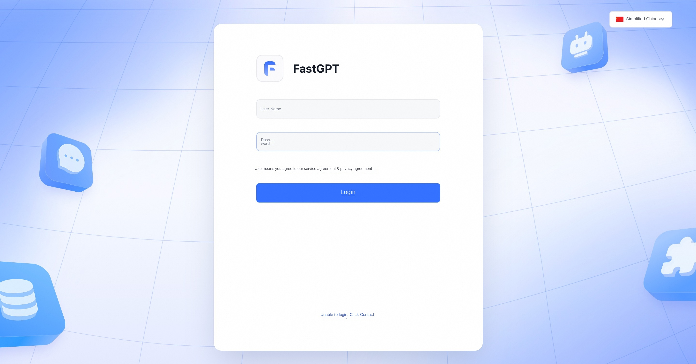
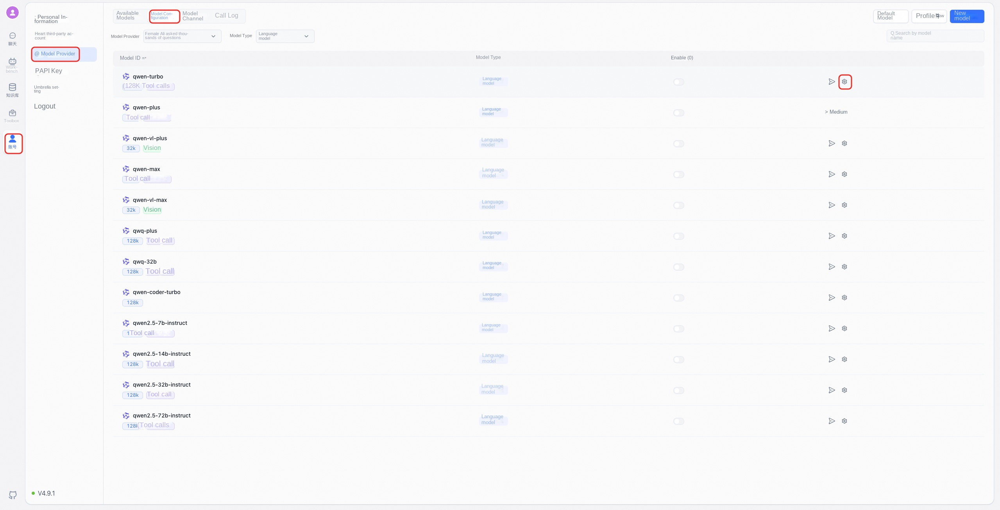
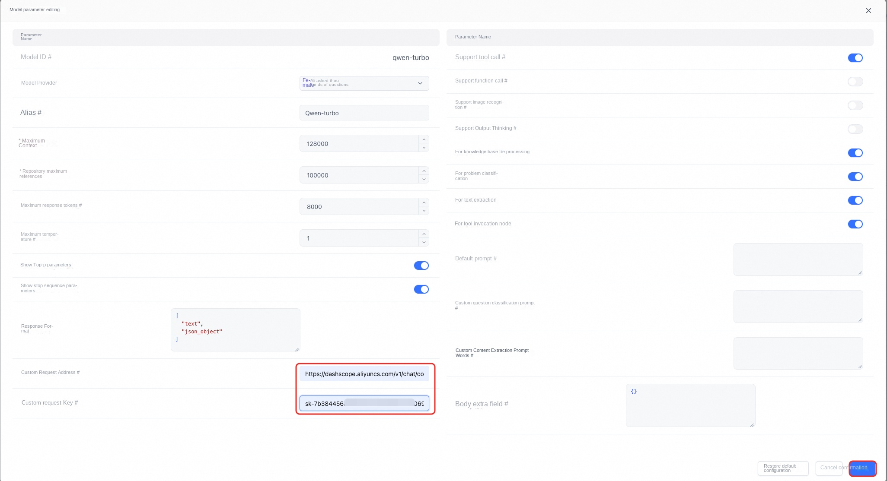
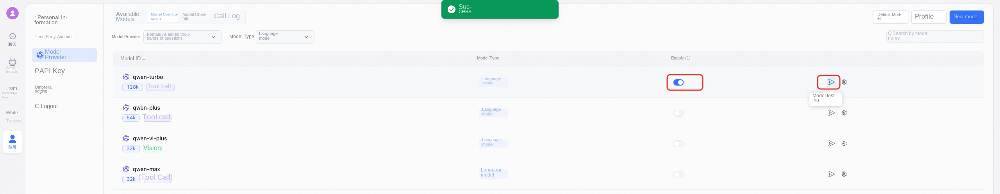

Prerequisites
To deploy the FastGPT Community Edition service instance, you need to access and create some Alibaba Cloud resources. Therefore, your account must contain permissions for the following resources. Note: This permission is required only when your account is a RAM account.
| Permission policy name | Comment |
|---|---|
| AliyunECSFullAccess | Permissions to manage ECS instances |
| AliyunVPCFullAccess | Permissions to manage a VPC |
| AliyunROSFullAccess | Manage permissions for Resource Orchestration Service (ROS) |
| AliyunComputeNestUserFullAccess | Manage user-side permissions for the compute nest service (ComputeNest) |
Billing Description
The cost of FastGPT Community Edition deployment in Computing Nest mainly involves:
-Selected vCPU and memory specifications -System disk type and capacity -public network bandwidth
Deployment process
-
Visit the Computing Nest FastGPT Community Edition Deployment Link and fill in the deployment parameters as prompted: 
-
After completing the parameters, you can see the corresponding RFQ details. After confirming the parameters, click Next: Confirm Order.
-
Confirm that the order is complete and agree to the service agreement and click Create Now to enter the deployment phase.
-
After the deployment is completed, you can start using the service. Enter the service instance details and click the service address. 
-
After loading, you can log in to use FastGPT services. 
-
Select the model: 
-
Configure the request address and APIKey for the model:  Request address: https://dashscope.aliyuncs.com/compatible-mode/v1/chat/completions
-
After saving click Enable and test: 
-
After the test is successful, the model can be used normally.
Instructions for use
For more usage, please refer to the FastGpt official website document.